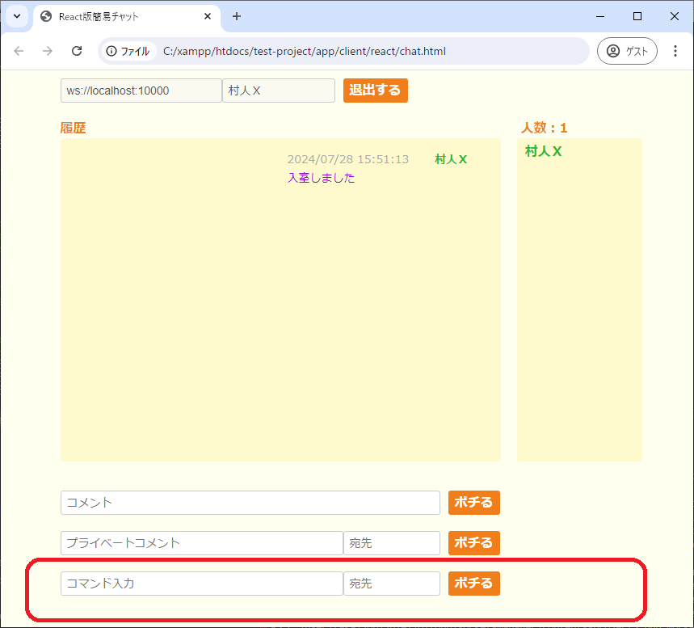
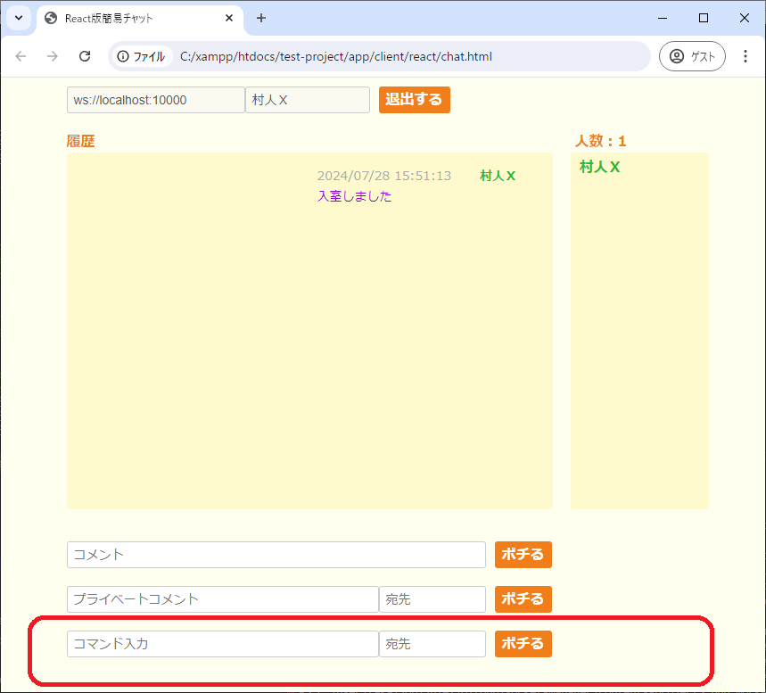
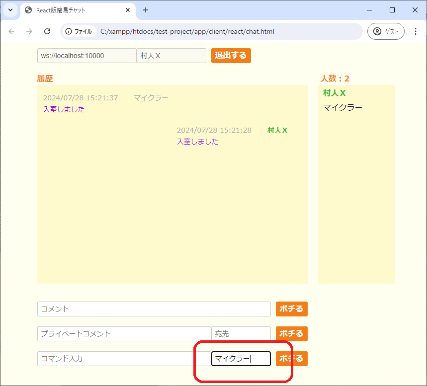
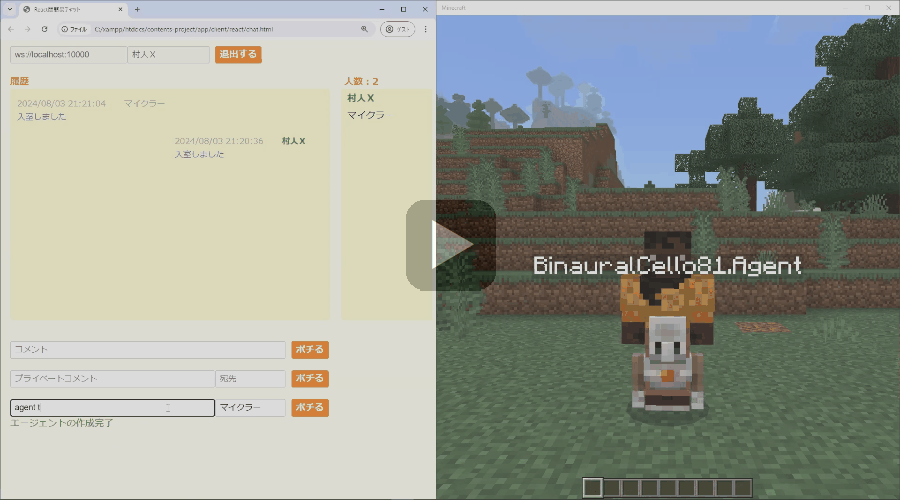
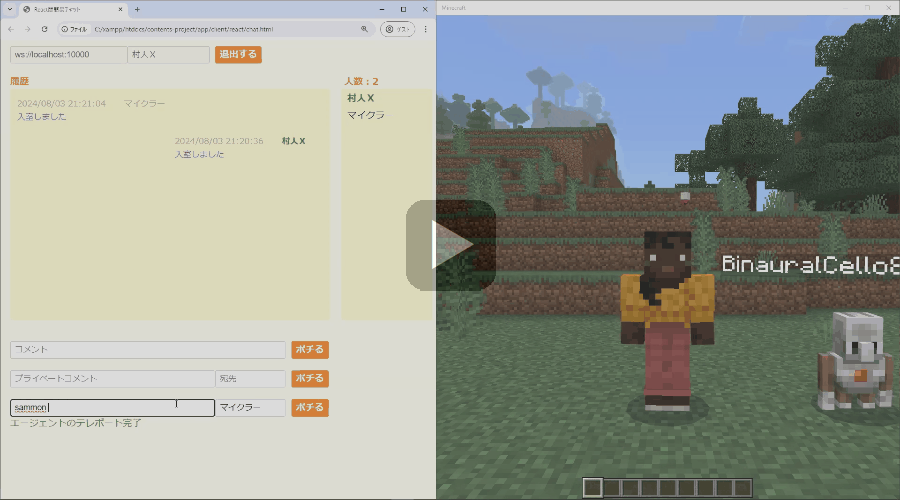
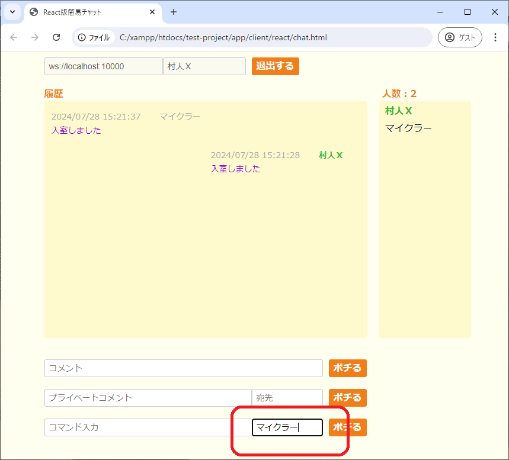
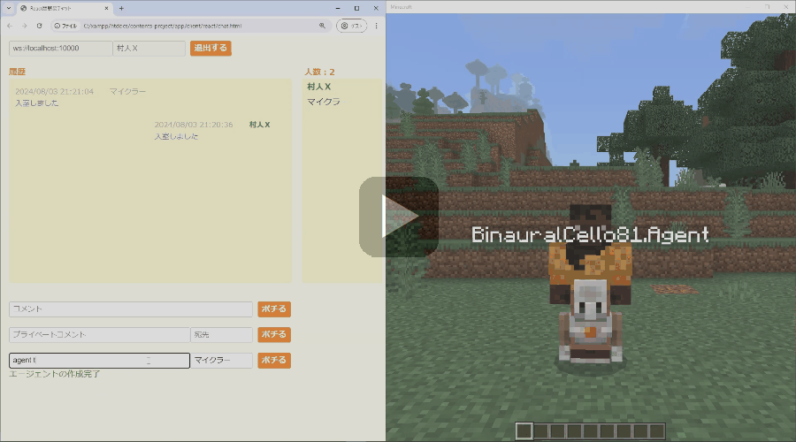
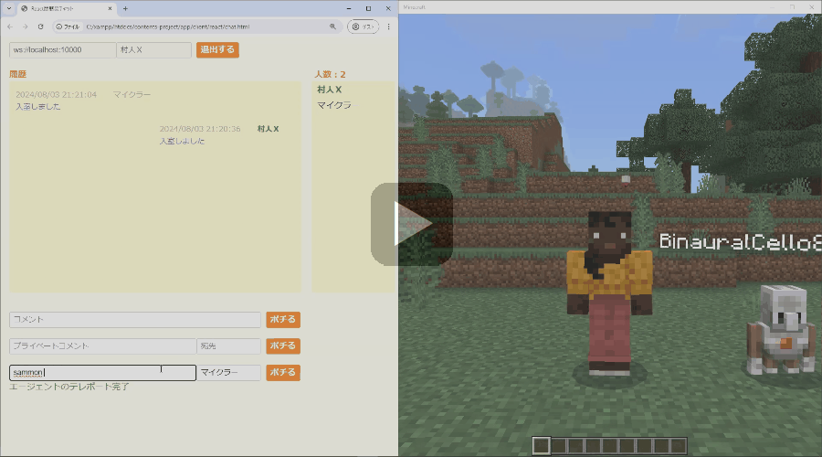

【コマンド送信機能】
はじめに
以下のチャット画面の最下部にコマンド入力フォームを設置して、Webブラウザで入力したコマンドをマインクラフト側で実行できるようにしています。

※上の画面はReact版のものですが、jQuery版にも同じように実装しています。
ここで入力されたコマンドはそのままマインクラフト上で実行されますが、実行者がエンティティである事を前提としている一部のコマンド（例えば
Websocketサーバー側の実装では全てのコマンドが使えるわけではありませんが、独自の隠しコマンドも存在するため、どのコマンドが利用可能で隠しコマンドがどのように利用できるのかをこの機能を使って調査していく事ができます。
※コンテンツページの「スタンドの弓矢」の実装を確認する際にも使っています。

※上の画面はReact版のものですが、jQuery版にも同じように実装しています。
ここで入力されたコマンドはそのままマインクラフト上で実行されますが、実行者がエンティティである事を前提としている一部のコマンド（例えば
executeコマンド）では使えないものがあるので注意が必要です。Websocketサーバー側の実装では全てのコマンドが使えるわけではありませんが、独自の隠しコマンドも存在するため、どのコマンドが利用可能で隠しコマンドがどのように利用できるのかをこの機能を使って調査していく事ができます。
※コンテンツページの「スタンドの弓矢」の実装を確認する際にも使っています。
使い方
あらかじめWebsocketサーバーを起動した状態でWebブラウザとマインクラフトからの接続を完了しておく必要があります。
接続手順や画面の起動方法については▶マインクラフトの環境のページをご覧ください。
それでは折角なのでWebsocketサーバーのみで使える以下の隠しコマンドを使ってみます。

※今回の場合「マイクラー」という名前がマインクラフト側から接続しているユーザー名です。
そして以下のようにエージェントの作成コマンドを実行してみます。

次にエージェントを移動させてみます。

マインクラフトの画面でリアルタイムに連携されている事がわかると思います。
マインクラフトからのレスポンスも反映していますので、例えば

接続手順や画面の起動方法については▶マインクラフトの環境のページをご覧ください。
それでは折角なのでWebsocketサーバーのみで使える以下の隠しコマンドを使ってみます。
- agent create
- プレイヤー専用のエージェントを呼び出します。
- agent tp <coordinates>
- エージェントを指定した座標へテレポートします。

※今回の場合「マイクラー」という名前がマインクラフト側から接続しているユーザー名です。
そして以下のようにエージェントの作成コマンドを実行してみます。
次にエージェントを移動させてみます。

マインクラフトの画面でリアルタイムに連携されている事がわかると思います。
マインクラフトからのレスポンスも反映していますので、例えば
summonコマンドをsammonと打ち間違えていたとしても以下のようにエラーの内容が赤字で表示されるようにしています。